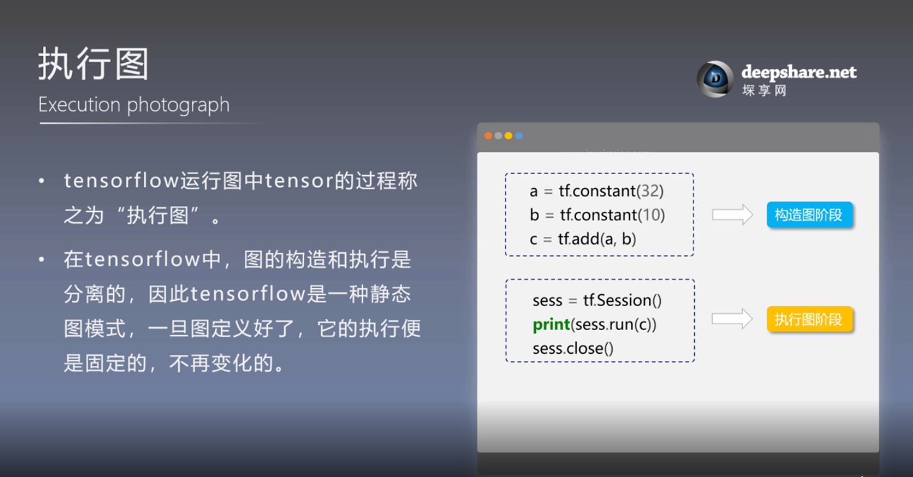

TensorFlow即是实现机器学习算法的接口，也是执行机器学习算法的框架
TensorFlow介绍
- TensorFlow基础架构
TensorFlow是谷歌2015年发布的第二代分布式机器学习系统。前端支持Python、C++、Go、Java等多种开发语言，后端使用C++、CUDA等写成，可以方便的部署到各种平台。
构件图、执行图
TensorFlow使用数据流式图来规划计算流程，图中的节点被称之为 op (operation 的缩写)。 一个 op 获得 0 个或多个Tensor, 执行计算，产生 0 个或多个Tensor。
一个 TensorFlow 图描述了计算的过程，不过图是静态的，为了进行计算，图必须在会话里被启动。会话将图的 op 分发到诸如 CPU 或 GPU 之类的设备上， 同时提供执行 op 的方法。执行后再将产生的 tensor 返回。在 Python 语言中, 返回的 tensor 是 numpyndarray对象; 在 C 和 C++ 语言中, 返回的 tensor 是tensorflow::Tensor实例.
在一个会话中启动图
构建图完成后，执行图过程需要通过session会话完成：
1
2
3
4
5
6
7
8
9
10
11import tensorflow as tf
#构建图
matrix1 = tf.constant([[3., 3.]])
matrix2 = tf.constant([[2.],[2.]])
product = tf.matmul(matrix1, matrix2)
#执行图
#函数调用 'run(product)' 触发了图中三个 op (两个常量 op 和一个矩阵乘法 op) 的执行，返回result
sess = tf.Session()
result = sess.run(product)
print (result)
sess.close()session使用完后需要关闭释放资源，除了显示调用close()，也可以用with自动完成：
1
2
3with tf.session() as sess:
result = sess.run(product)
print(result)分配设备：
一般不需要显示指定使用GPU还是CPU，TensorFlow能自动检测；如果检测到GPU会尽可能地利用找到的第一个GPU来执行操作。
如果机器上有多个可用GPU，除了第一个其余默认是不参与计算的，需要明确指派。1
2
3with tf.Session() as sess:
with tf.device("/gpu:1"):
...
交互式使用
为了便于使用类与IPython的Python交互环境，可用InteractiveSession代替Session类，使用Tensor.eval()和Operation.run()代替Session.run()：1
2
3
4
5
6
7
8
9import tensorflow as tf
sess = tf.InteractiveSession()
x = tf.Variable([1.0, 2.0])
a = tf.constant([3.0, 3.0])
# 使用初始化器 initializer op 的 run() 方法初始化 'x'
x.initializer.run()
# 增加一个减法 sub op, 从 'x' 减去 'a'. 运行减法 op, 输出结果
sub = tf.sub(x, a)
print sub.eval()Fetch、Feed
Fetch
需要在op的一次运行中获取多个tensor值：1
result = sess.run([mul, intermed])
Feed
Feed机制相当于提供数据作为run()调用的参数，只在调用它的方法内有效，方法结束feed就会消失。1
2
3
4
5input1 = tf.placeholder(tf.types.float32)
input2 = tf.placeholder(tf.types.float32)
output = tf.mul(input1, input2)
with tf.Session() as sess:
print sess.run([output], feed_dict={input1:[7.], input2:[2.]})
Liunx下TensorFlow_GPU版本安装步骤
TensorFlow并不是全部由Python写成的库，底层有很多C++乃至CUDA的代码。
先在本地安装Python3.5
安装Anaconda
Anaconda是Python的一个科学计算发行版，内置了数百个Python经常会使用的库，单独安装这些库时很容易出现兼容性问题，建议安装Anaconda。- 到Anaconda官网下载Anaconda3 4.2.0版
- 到Anaconda下载目录执行
bash Anaconda3-4.2.0-Linux-x86_64.sh - 接下来会看到安装提示，直接按回车确认进入下一步
- 安装完成后，程序提示是否把anaconda3的binary路径加入.bashrc，建议添加（这样以后python和ipython命令会自动使用Anaconda Python3.5的环境）
安装正确的CUDA版本
到CUDA官网下载CUDA安装包，一般里面集成了显卡驱动
安装前需要暂停当前NVIDIA驱动的X server，如果是远程连接的Linux机器，可以运行该命令：
sudo init 3将CUDA安装包权限设置成可执行的，并执行安装程序：
1
2chmod u+x cuda_8.0.44_linux.run
sudo ./cuda_8.0.44_linux.run接下来是CUDA安装的一些确认，除了确认是否安装CUDA 8.0 Samples选择n之外，其余的选择y；等待CUDA安装完成
到系统环境设置CUDA路径
1
2
3
4
5
6
7vim ~/.bashrc
#cuda的绝对路径
export LD_LIBRARY_PATH=/usr/local/cuda-8.0/lib64:/usr/local/cuda-8.0/extras/
CUPTI/lib64:$LD_LIBRARY_PATH
export CUDA_HOME=/usr/local/cuda-8.0
export PATH=/usr/local/cuda-8.0/bin:$PATH
source ~/.bashrc
安装正确的CUDNN版本
cuDNN是NVIDIA推出的深度学习中CNN和RNN高度优化的实现，目前绝大多数的深度学习框架都使用cuDNN来驱动GPU计算。- 从CUDNN官网下载，并解压
安装TensorFlow
下载安装
1
pip install https://storage.googleapis.com/tensorflow/linux/gpu/tensorflow_gpu-1.0.0rc0-cp35-cp35m-linux_x86_64.whl
选择是否确认信息到是否支持CUDA这一步，选择支持
选择要支持使用的CUDA、CUDNN版本及安装路径
CUDA选择8.0版本，路径选择/usr/local/cuda-8.0；
CUDNN选择5.1版本，路径也设置为/usr/local/cuda-8.01
2
3
4
5Please specify the location where CUDA 8.0 toolkit is installed. Refer to
README.md for more details. [default is: /usr/local/cuda]: /usr/local/cuda-8.0
Please specify the location where CUDNN 5.1 V2 library is installed. Refer to
README.md for more details. [default is: /usr/local/cuda]: /usr/local/cuda-8.0